|
Seeking
Mandela
Peacemaking Between Israelis and Palestinians
Adam, Heribert and Kogila Moodley 248 pp •
6x9 • Spring 2005
paper 978-1-59213-396-3
cloth 978-1-59213-395-6
Excerpt available |
| 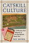 |
Catskill
Culture
A Mountain Rat's Memories of the Great Jewish Resort Area
Brown, Phil 304 pp • 7x10 • Fall
1998
paper 978-1-59213-189-1
cloth 978-1-56639-642-4
Excerpt available |
|
Elie
Wiesel and the Politics of Moral Leadership
Chmiel, Mark 248 pp • 6x9 • Spring
2001
cloth 978-1-56639-857-2
Excerpt available |
| 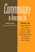 |
Commentary
in American Life
edited by Friedman, Murray 232 pp • 6x9
• Spring 2005
paper 978-1-59213-106-8
cloth 978-1-59213-105-1
Excerpt available |
|
Philadelphia
Jewish Life, 1940-2000
edited by Friedman, Murray, afterword by Dan Rottenberg 328
pp • 8.375x10.875 • Fall 2002
cloth 978-1-56639-999-9
Excerpt available |
 |
My
Father's Testament
Memoir of a Jewish Teenager, 1938-1945
Gastfriend, Edward, afterword by Bj�rn Krondorfer 187
pp • 5.5x8.25 • Fall 1999
paper 978-1-56639-735-3
cloth 978-1-56639-734-6
Excerpt available |
|
Jewish
Identity
edited by Goldberg, David Theo and Michael Krausz 344
pp • 6x9 • Spring 1993
paper 978-1-56639-040-8
cloth 978-1-56639-039-2 |
| 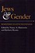 |
Jews
and Gender
Responses to Otto Weininger
edited by Harrowitz, Nancy A. and Barbara Hyams 352
pp • 6x9 • Fall 1994
paper 978-1-56639-249-5
cloth 978-1-56639-248-8
Excerpt available |
| 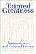 |
Tainted
Greatness
Antisemitism and Cultural Heroes
edited by Harrowitz, Nancy A. 328 pp •
6x9 • Spring 1994
paper 978-1-56639-161-0
cloth 978-1-56639-153-5
Excerpt available |
| 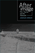 |
Afterimage
Film, Trauma, and the Holocaust
Hirsch, Joshua 232 pp • 6x9 • Fall
2003
paper 978-1-59213-209-6
cloth 978-1-59213-208-9
Excerpt available |
|
Jews
Against Zionism
The American Council for Judaism, 1942-1948
Kolsky, Thomas A. 288 pp • 6x9 •
Fall 1990
paper 978-1-56639-009-5
cloth 978-0-87722-694-9 |
|
Fireweed
A Political Autobiography
Lerner, Gerda 408 pp • 7x10 • Spring
2002
paper 978-1-59213-236-2
cloth 978-1-56639-889-3
Excerpt available |
|
The
Holocaust and Memory in the Global Age
Levy, Daniel and Natan Sznaider, translated by Assenka Oksiloff
240 pp • 5.5x8.25 • Fall 2005
paper 978-1-59213-276-8
cloth 978-1-59213-275-1
Excerpt available |
|
White
Boy
A Memoir
Naison, Mark D. 240 pp • 6x9 • Spring
2002
paper 978-1-56639-942-5
cloth 978-1-56639-941-8
Excerpt available |
| 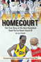 |
Homecourt
The True Story of the Best Basketball Team You've Never Heard Of
Needle, Larry
72 pp • 5.5x8.5 • Spring 2013
paper 978-0-98195-608-4
|

|
Klezmer
Music and Community in Twentieth-Century Jewish Philadelphia
Netsky, Hankus
New in Paperback!
186 pp • 6x9 • Spring 2017
paper 978-1-4399-0904-1
cloth 978-1-4399-0903-4
|
| 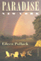 |
Paradise,
New York
A Novel
Pollack, Eileen 288 pp • 5x9 • Fall
1998
paper 978-1-56639-789-6
cloth 978-1-56639-657-8
Excerpt available |
 |
Borscht
Belt Bungalows
Memories of Catskill Summers
Richman, Irwin 256 pp • 7x10 • Fall
1997
paper 978-1-59213-190-7
cloth 978-1-56639-585-4
Excerpt available |
| 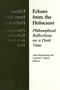 |
Echoes
from the Holocaust
Philosophical Reflections on a Dark Time
edited by Rosenberg, Alan and Gerald E. Myers 472
pp • Spring 1988
paper 978-0-87722-686-4
cloth 978-0-87722-539-3 |
|
Messiahs of 1933
How American Yiddish Theatre Survived Adversity through Satire
Schechter, Joel
304 pp • 6x9 • Spring 2008
978-1-59213-872-2
Excerpt available |
| 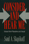 |
Consider
and Hear Me
Voices from Palestine and Israel
Slapikoff, Saul A. 240 pp • 5.5x8.25
• Fall 1992
paper 978-0-87722-983-4
cloth 978-0-87722-982-7 |
| 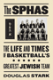 |
The SPHAS
The Life and Times of Basketball's Greatest Jewish Team
Stark, Doug, Foreword by Lynn Sherr 344 pp • 6x9 • Spring 2011
cloth 978-1-59213-633-9
Excerpt available |
| 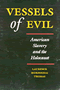 |
Vessels
of Evil
American Slavery and the Holocaust
Thomas, Laurence Mordekhai
232 pp • 5.5x8.25
• Fall 1993
paper 978-1-56639-100-9
cloth 978-1-56639-093-4 |
 |
America's
Jews in Transition
Waxman, Chaim 290 pp • Fall 1983
paper 978-0-87722-329-0
cloth 978-0-87722-321-4 |